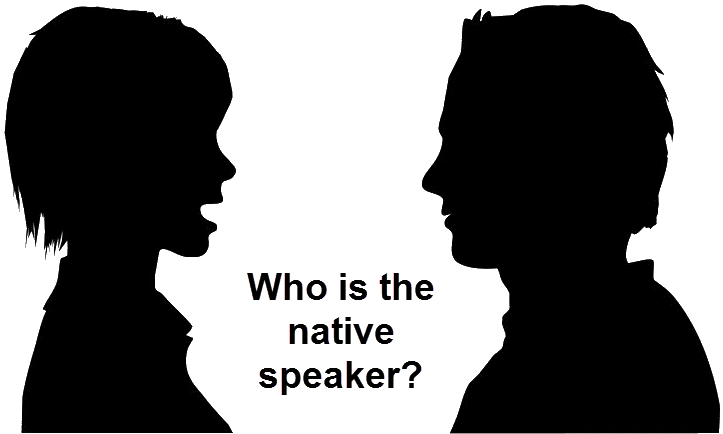

5 Things You Should NEVER Do After Eating!
- Sleep
- Smoke
- Shower
- Eat Fruit
- Drink Tea
Going to sleep right after you eat causing your stomach to burn through the night, which causes discomfort, bloating, and odd sleeping patterns. A study at the University of Ioannina Medical School found that people who waited the longest after eating to go to bed were less likely to have a stroke. With this is mind, the rule of thumb is to not eat at least a few hours before bed.
Unfortunately for some people, smoking is still a thing. While it’s probably one of the most damaging things you can do to your lungs, if you’re going to do it, at least wait a couple hours after eating. This is because the nicotine in cigarettes binds to the excess oxygen that is necessary in digestion, which then allows your body to absorbs more carcinogens than normal. According to studies, smoking right after a meal is the same as smoking ten cigarettes at once. It also increases the risk of bowel and lung cancer.
When we shower, our bodies increase blood flow to reach your hands, legs, and body, which then decreases the amount of blood flow to your stomach. This weakens the digestive system, causing it to become inefficient, which can cause stomach pains.
You probably thought you could eat fruit at any time, didn’t you? Well, it’s actually best to eat fruit on an empty stomach. This is because fruits require different enzymes to digest, and the simple sugars in fruit need time to be absorbed completely by the body. With nothing else in your belly, you benefit from all the nutrients, fiber, and simple sugars. If you wait until close to or after a meal, however, fruit remains in the stomach for an extended period and rots in the gut. This can cause indigestion, heartburn, burping, and other discomforts.
Drinking eat right after a meal interferes with iron absorption. The tannic acid in the tea binds with protein and iron in our food, preventing our bodies from reaping the benefits of digesting them. This results in an 87% decrease in iron absorption! Low iron can trigger anemia, a deficiency of red blood cells in the blood, which then causes extreme fatigue, weakness, pale skin, chest pain, dizziness, cold hands and feet, brittle nails, and poor appetite.
So, the next time you eat, make a mental note of the time and be sure to leave some space in between lying down, eating fruit, drinking tea, or showering. Just stop smoking.
How to Speak English Like a Native?

Do you ever get jealous of chameleons? You know — those colorful reptiles that can blend in anywhere.
They just shift their colors, and, poof! They look exactly like the tree they’re climbing or the rock they’re sitting on. Wouldn’t it be great to be a language chameleon?
Life would be so much easier if we could just shift our accents, vocabulary and grammar to sound exactly like native English speakers. Well, we can dream…
In the meantime, if you want to speak English like a native, you’ll have to put in some hard work. But it might not be as hard as you think. There are practical steps you can take to sound more fluent, and more like a native, from your pronunciation to your word usage.
With these tips, plus patience and practice, you’ll be a language chameleon in no time.